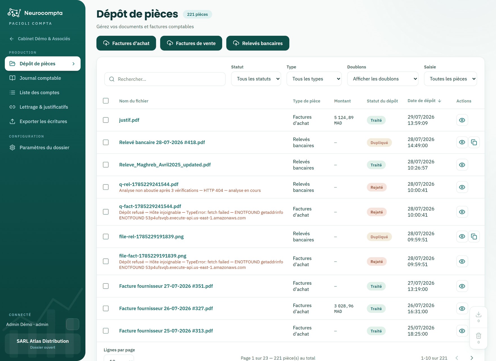

Déposer des pièces
Transmettre factures et relevés pour analyse automatique.
Le dépôt de pièces est le point d'entrée de la production comptable. Vous déposez vos documents par catégorie ; l'analyse en extrait les données et prépare les écritures.
Les doublons sont détectés sur le contenu du fichier, et non sur son nom : le même document redéposé sous un autre nom est reconnu.

Déposer un document
- Cliquez sur la zone correspondant au type : facture d'achat, facture de vente ou relevé bancaire.
- Choisissez un ou plusieurs fichiers. Formats acceptés : PDF, PNG, JPG. Taille maximale : 5 Mo par fichier.
- La pièce apparaît aussitôt dans le tableau, avec son statut de traitement.
Suivre le traitement
- Téléchargé : la pièce est reçue, l'analyse n'a pas commencé.
- En traitement : l'analyse est en cours.
- Traité : les écritures sont disponibles dans le journal.
- Rejeté : l'analyse n'a pas abouti ; le motif est affiché en clair.
- Dupliqué : une pièce identique existe déjà dans le dossier.
Arbitrer un doublon
Une pièce détectée comme doublon n'est pas décomptée de votre enveloppe et ne produit pas d'écriture. Le bouton de comparaison affiche les deux fichiers côte à côte, au format A4, pour trancher.
- Si les deux documents sont bien identiques, supprimez le doublon.
- S'il s'agit de deux pièces différentes, forcez le traitement depuis l'écran de comparaison.
Agir sur plusieurs pièces
Cochez des lignes : une barre d'actions apparaît en bas de l'écran.
- Télécharger les fichiers d'origine sur votre poste.
- Supprimer les pièces sélectionnées, après confirmation.
Supprimer une pièce supprime aussi les écritures qui en découlent. Si certaines sont validées, une confirmation supplémentaire vous est demandée.
La recherche et les filtres Statut, Type et Doublons se combinent : utilisez-les pour isoler rapidement les pièces à reprendre.